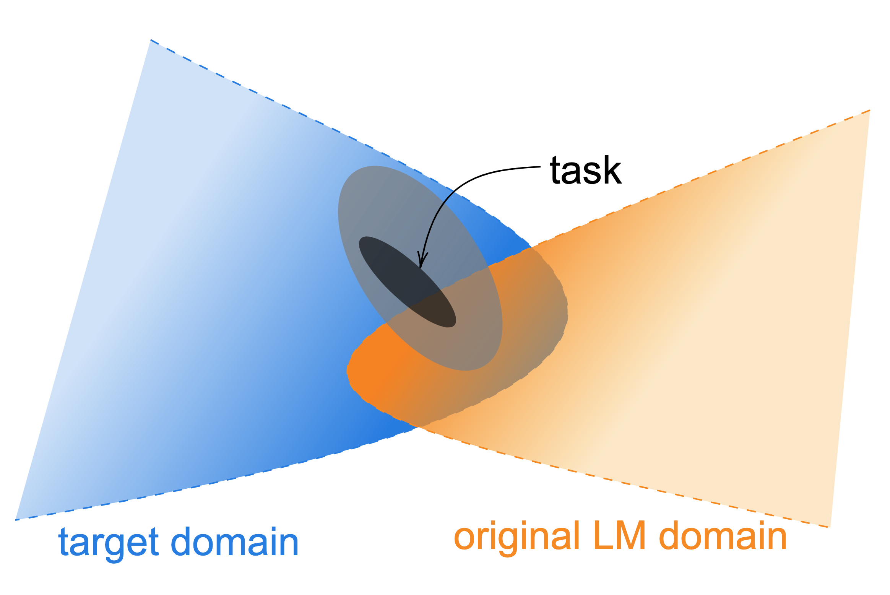

开源基座模型(通用能力)
持续预训练与领域适配
不是每个团队都有资源从零训一个基座。更常见的路线是拿一个开源基座（如 Llama、Qwen），在自己的领域语料上继续预训练，注入领域知识或扩展语言能力。但「接着训」看似简单，实际上最大的敌人是灾难性遗忘——新知识学进去，旧能力丢出来。这一页讲清怎么做领域注入、语言扩展、词表扩充，以及怎么用回放数据、低学习率、正则化与双基准评估把遗忘压下去。读完你应该能设计一条「领域能力上去、通用能力不崩」的持续预训练配方。
一图看懂
持续预训练的核心矛盾是新知识与旧能力的拉锯。直接拿领域语料猛训，模型会变成领域专家但丧失通用能力；完全不训，又学不到领域知识。解决方案是在两者之间找平衡：用回放数据混入旧知识、用学习率调度控制更新幅度、用词表扩充适配新语言——每一步都是在「学新」和「保旧」之间调旋钮。
- 持续预训练
- 开源基座模型 / (通用能力)
- 领域知识注入
- 持续预训练领域语料
语言能力扩展- 持续预训练新语言语料
新 token 适配- 持续预训练词表扩充
- 灾难性遗忘风险通用能力下降
- 领域知识注入
- 语言能力扩展
- 新 token 适配
- 缓解手段回放数据 + 学习率调度 + 正则化
- 灾难性遗忘风险 / 通用能力下降
- 领域增强的基座兼顾新旧能力
- 缓解手段 / 回放数据 + 学习率调度 + 正则化
持续预训练的三种典型场景
「在已有基座上继续训练」涵盖的需求其实差别很大，至少要分清三种。先看一张来自领域自适应预训练奠基论文《Don't Stop Pretraining》的原图——它把「任务数据、目标领域、预训练域」三者的关系画成了几层椭圆，是理解「为什么要继续预训练、继续训练什么」的最好起点。

新手读这张图，先看三个不同大小的椭圆：① 最外面的浅色大椭圆是「目标领域」——你希望模型最终擅长的那个范围（比如整个医学领域）；② 中间的深色椭圆是「任务数据分布」——你手上实际拿到的数据（比如几百万条医疗问答），它通常只是目标领域里非随机采到的一小片；③ 图里可能还与某个更大的椭圆有交叠——那是模型原始预训练所在的领域分布（比如通用互联网文本）。图的要点是：任务数据（你有的）≠ 目标领域（你想要的），且目标领域常常落在原始预训练域之外。
这张图直接引出持续预训练的三个关键决策：一是「该不该继续训」——如果目标领域已经几乎被预训练域覆盖（两个椭圆几乎重合），继续训练收益有限，不如直接微调或走 RAG；二是「用什么数据训」——理想做法是尽量逼近目标领域而非只盯着任务数据，所以需要收集更广的领域语料；三是「会忘掉什么」——目标领域与预训练域差异越大，把权重推向新领域时，旧领域对应的能力就越容易被挤出（这就是灾难性遗忘的分布学根源）。把这三层椭圆记在脑子里，后面每一节（回放、学习率、词表）都是在处理这张图里的「距离」问题。
领域注入
让通用基座学会某个领域（医疗、法律、金融、代码）的专业知识。典型做法：收集领域语料，与通用语料混合后继续训练。关键问题是领域语料的配比和通用能力的保持。
语言扩展
让一个英文基座学会中文、日文或阿拉伯文。难点在于基座的词表可能没有对应语言的 token，一个汉字被拆成多个无意义的子串，学习效率极低。通常需要词表扩充。
时效性更新
基座的训练数据有截止日期，需要注入最新的世界知识（新闻、事件、法规）。难点是新知识的量通常远小于旧知识，更容易触发遗忘，且新旧知识可能矛盾。
一句话直觉
三种场景的本质区别，是「新知识和旧知识的分布差异有多大」。领域注入差异中等、语言扩展差异最大、时效性更新差异较小但新旧可能冲突。差异越大，遗忘越猛，回放比例和学习率就要越保守。
灾难性遗忘：核心敌人
灾难性遗忘（Catastrophic Forgetting）是持续学习的经典问题，在 LLM 上尤为严重。原因是神经网络的参数是共享的——学新知识时更新的那些权重，同时也负责旧知识的存储。大量更新领域语料的梯度，会系统性地把通用能力对应的权重推向对领域更优、但对通用更差的方向。
遗忘的严重程度取决于几个因素：
- 学习率：学习率越大，权重偏移越快，遗忘越严重。持续预训练的学习率通常要比从零预训练低一个数量级。
- 数据量：领域语料越多、与原训练数据分布差异越大，遗忘越严重。
- 训练步数：训练越久遗忘越多，但也学得越深——需要在「学够了」和「忘太多」之间找平衡。
- 模型规模：经验上，更大的模型对遗忘的抵抗力更强——参数冗余提供了更多「缓冲空间」。
举个具体场景：对一个在通用语料上训好的 7B 基座做医疗持续预训练，如果直接用 100% 医学文献、学习率 2e-4 猛训几千步，通常会看到 MMLU（通用知识）在几百步内从 65 掉到 40 以下，而医学 benchmark 还没来得及涨——典型的「还没学会新东西，先把老本事丢了」。这正是遗忘比学习更快的可视化证据：负向更新一旦启动，往往比正向学习更先生效，所以持续预训练的第一原则是「先别把旧能力冲掉」。
核心主题抑制遗忘手段族
01数据层
- 数据回放 混通用
- 领域/通用配比
02学习率层
- 低学习率
- 短预热
03架构层
- LoRA 冻结
- 权重平均
04评估层
- 领域+通用
展开：为什么大模型比小模型「更抗遗忘」
一个常被引用的经验现象：同样是持续预训练，7B 模型的通用能力下滑幅度往往明显小于 100M 级别的小模型。主流解释来自过参数化（over-parameterization）与彩票假设：大模型有大量「冗余参数」，其中一部分专门编码了通用能力，另一部分可以腾出来承载新知识，两者在参数空间里没那么激烈地互相挤占。
更形式化地看，假设原基座的权重 $W_0$ 处在一个平坦的极小值，通用能力对应一整片「好区域」。小模型这片区域很窄，新知识梯度很容易把参数推出去；大模型这片区域更宽，同样的梯度相对位移更小，参数更容易留在好区域内。这也是为什么「用小模型做持续预训练实验」不能直接外推到大模型——小模型上看到的剧烈遗忘，在大模型上可能温和得多。所以评估时务必在目标规模上测，不要拿小模型的遗忘曲线给大模型下结论。
注意这只是一个经验直觉，并非严格定理：当领域语料量极大、训练步数极长时，大模型同样会严重遗忘。规模带来的是「缓冲」，不是「免疫」。
回放数据：最有效的遗忘抑制
抑制遗忘最直接也最有效的手段是数据回放（Data Replay）：在领域语料中混入一部分通用语料，让模型在学新知识的同时「复习」旧知识。它之所以比正则化类方法更可靠，是因为它直接作用在数据分布上——只要训练分布里始终含有旧知识，模型就没有动机把旧能力对应的权重推走。正则化类方法（如 EWC）是在「改了权重之后」用惩罚往回拉，而回放是在「喂数据」这一步就从源头避免偏移，所以前者在 LLM 上常常效果不稳定，后者几乎总是主力的原因就在这里。
sequenceDiagram
autonumber
participant D as 数据加载器
participant B as 训练步
participant M as 模型
loop 每个 batch
D->>B: 按 70/30 抽 领域 + 回放
B->>M: 前向 + 反向
M->>M: 领域梯度 更新权重
M->>M: 回放梯度 复习旧能力
end
Note over M: 领域能力 ↑ 通用能力 保持
关键决策是回放数据的配比。太少了压不住遗忘，太多了领域知识学不进去。下面这张表给出不同场景的经验起点，但一定要以自己跑出来的双基准为准：
| 场景 | 分布差异 | 建议回放比例 | 理由 |
|---|---|---|---|
| 领域注入（相近） | 小 | 20%–30% | 差异小，少量回放即可稳住 |
| 领域注入（差异大） | 大 | 40%–50% | 差异大，需要更多旧知识锚定 |
| 语言扩展 | 很大 | 30%–50% | 新语言几乎不共享 token，需强锚定 |
| 时效性更新 | 中 | 20%–40% | 新知识少，防矛盾优先于防遗忘 |
回放数据的选择也有讲究。不是随便抓一批通用文本就行，要尽量覆盖基座原有的能力维度：代码、数学、多语言、常识问答等。如果回放数据只有百科文本，模型的代码能力仍然会退化。实际操作中，数据工程 里提到的数据配比策略在这里同样适用——只是从「从头配」变成了「补着配」。
from torch.utils.data import ConcatDataset, RandomSampler
# 用两个数据集构造一个「按比例回放」的混合数据加载器
domain_ds = load_domain_corpus("medical/") # 领域语料
replay_ds = load_general_corpus("pile_subset/") # 通用回放语料
replay_ratio = 0.3 # 回放占 30%
domain_repeats = int(1 / (1 - replay_ratio) - 1) # 让领域语料被多采几次以达比例
mixed = ConcatDataset([replay_ds] + [domain_ds] * domain_repeats)
loader = DataLoader(mixed, sampler=RandomSampler(mixed), batch_size=1024)
# 更稳妥的做法是用 IterableDataset 做在线混合,
# 避免一次性把领域语料重复进内存一个实用的实验顺序：先只训领域语料跑几百步，画出通用能力随步数下降的曲线，确认遗忘速度；再逐步加入回放数据（10% → 30% → 50%），观察通用曲线何时被「托住」。这条曲线能帮你把回放比例定在「领域仍明显上升、通用不再崩」的临界点上，而不是拍脑袋选一个数。经验上，多数领域注入任务在 20%–40% 回放比例附近就能找到这个平衡点。
一句话直觉
回放数据就像考试前同时复习新学的章节和之前学过的章节——光看新章节，老知识就忘光了。混着看才能都记住。回放比例就是你给「旧知识」分配的复习时间占比。
学习率调度：控制更新幅度
从零预训练的学习率通常是 1e-4 到 3e-4，持续预训练要显著降低——典型值在 1e-5 到 5e-5 之间。原因是基座权重已经在一个好的位置上，大幅更新会破坏已有的表征结构。学习率是控制遗忘的最重要旋钮，比任何正则化方法都直接。一个有用的类比：从零预训练是从空地盖楼，持续预训练是在已有的楼里改造——你不能把承重墙拆了重盖，只能小修小补，否则整栋楼会塌；学习率就是你的「施工力度」，太大就塌，太小则改不动。
stateDiagram-v2
[*] --> Probe
Probe --> Target: 几百步试探 1e-6
Target --> Decay: 升到 1e-5 到 5e-5 主训
Decay --> [*]: 线性衰减到 0
note right of Probe
先让模型适应新分布
避免开局大改权重
end note
note right of Decay
在终点收敛到
更平坦的极小值
end note
| 维度 | 从零预训练 | 持续预训练 |
|---|---|---|
| 峰值学习率 | 1e-4 ~ 3e-4 | 1e-5 ~ 5e-5（低一个数量级） |
| 预热步数 | 数千步 | 数百步（模型已收敛，不需长预热） |
| 主调度 | Cosine 退火 | 低峰值 + 线性衰减 / 阶段式升温 |
| 训练步数 | 海量（数 T token） | 远少于从零（常是 1%–10%） |
常见的做法：
- 低峰值 + 线性衰减：从一个较低的峰值开始，线性衰减到接近零。比余弦调度更保守。
- 预热更短：从零预训练的预热可能需要几千步，持续预训练通常缩短到几百步——因为模型已经收敛了，不需要长预热来稳定。
- 阶段式学习率：先用极低学习率（如 1e-6）微调几步让模型适应新数据分布，再升到目标学习率，最后衰减。这种「先试探再加速」的策略对词表扩充后的训练尤为重要。
新手最容易搞错
「持续预训练」不是「微调」，两者的区别首先在数据形态：持续预训练用的是无标注的领域语料，训练目标是继续做语言建模（预测下一个 token），不涉及任何「问题-答案」对；而微调（SFT）用的是带指令和答案的标注数据，目标是学会「被问了就要答」。其次在训练方式：持续预训练通常全量更新权重、学习率比微调还低、训练量以「亿级 token 起步」；微调则可能只更新部分参数（LoRA）。把两者混为一谈，最常见的后果是——你拿 SFT 的数据管线去做持续预训练，模型学的是「把问题当语料续写」，完全不是你想要的效果。
常见坑
不要用从零预训练的学习率做持续预训练。一个常见错误是直接复用预训练脚本的超参数，结果几个 epoch 后模型就「忘光了」通用能力。学习率是控制遗忘的最重要旋钮——先从低值开始，观察通用基准是否下降，再决定要不要调高。
词表扩充：语言扩展的必经之路
当一个英文基座要学中文时，最大的障碍不是模型容量，而是词表。英文基座的 BPE 词表里几乎没有中文 token，一个中文字会被拆成 2-4 个 UTF-8 字节。这意味着：
- 序列被严重拉长——同样一段中文，token 数是英文的 3-5 倍，训练和推理效率大打折扣。
- 模型看到的不是语义单位，而是无意义的字节碎片，学习效率极低。
一个直观的代价：同样一句 30 字的中文，英文基座的原词表可能把它切成 60–90 个无意义的字节碎片 token，而经过词表扩充后往往只需 30–40 个语义 token——序列长度直接缩短一到两倍，训练速度和显存占用都随之改善，这正是词表扩充「性价比」的来源。反之，不做扩充直接训，模型要在更长、更破碎的序列上反复学习同样的语义，等效训练量被白白放大。
解决方案是词表扩充：在原有词表上新增一批目标语言的 token（如高频中文字、中文词组），然后重新训练 tokenizer。标准五步如下：
| 步骤 | 操作 | 关键注意 |
|---|---|---|
| 1. 训练新 tokenizer | 在目标语言语料上训练 BPE / Unigram | 只用目标语料的高频子串 |
| 2. 合并词表 | 旧 token 保留 + 新增 target token | 旧 token 的 id 不能变 |
| 3. 扩展 embedding | 在 embedding 层增加新行 | 新行随机初始化，旧行保留 |
| 4. 持续预训练 | 目标语料 + 回放语料混合训练 | 前几步梯度集中在新 embedding |
| 5. 收敛 | 新 embedding 收敛到合理位置 | 旧 embedding 保持不动 |
import torch
from transformers import AutoModelForCausalLM, AutoTokenizer
model = AutoModelForCausalLM.from_pretrained("meta-llama/Llama-2-7b")
tokenizer = AutoTokenizer.from_pretrained("meta-llama/Llama-2-7b")
# 1) 在中文语料上新增 token,合并进原词表(保持旧 id 不变)
new_tokens = learn_chinese_tokens("zh_corpus/", vocab_size=20000)
num_added = tokenizer.add_tokens(new_tokens) # 仅追加,不改旧 id
print(f"新增 {num_added} 个 token,词表变为 {len(tokenizer)}")
# 2) 扩展 embedding 与 lm_head 的行数
model.resize_token_embeddings(len(tokenizer))
# 3) 只对新加的行做随机初始化(旧行保持预训练值)
with torch.no_grad():
old_n = len(tokenizer) - num_added
nn.init.normal_(model.get_input_embeddings().weight[old_n:],
mean=0.0, std=0.02) # 小标准差,避免扰乱
# 若 lm_head 不共享权重,同样处理输出侧关键工程细节：
- Embedding 初始化：新 token 的 embedding 随机初始化（通常用较小的标准差），然后通过训练收敛到合理位置。旧 token 的 embedding 要保留，不能重新初始化——否则整个模型的语言能力崩溃。
- 扩展方向：在
nn.Embedding层增加行数，新行是新 token。在输出层的lm_head（如果与 embedding 不共享权重）同样需要扩展。 - 训练焦点：前几步的梯度几乎全集中在新的 embedding 上，因为只有它们的梯度最大（随机初始化的参数梯度大）。这实际上是一种自然的「焦点训练」——模型先学新 token 的表示，再逐渐融入旧知识。
词表扩充的代价是模型不再与原始基座权重兼容——新词表的 token id 变了，旧的 checkpoint 不能直接加载。同时，词表扩大后 tokenizer 的行为也变了，下游使用方必须用新 tokenizer。
展开：手算——词表扩充到底能省多少训练算力
「序列被拉长」的代价经常被低估，这里算一笔具体的账。假设你有一个 7B 的英文基座，要让它学会中文，中文语料共 20 亿 token（原始字符口径）。分两种情况：
- 不扩充词表：英文 BPE 词表里几乎没有中文 token，每个汉字会被切成 2–4 个 UTF-8 字节片段 token。取平均 3 倍放大，则 20 亿字符 → 约 60 亿 token。训练这 60 亿 token 的 FLOPs 约为 $6 \times 7\text{B} \times 6\text{B} \approx 2.5 \times 10^{20}$。
- 扩充词表后：新增约 2 万个中文 token 后，平均每个汉字约 1.3 个 token，20 亿字符 → 约 26 亿 token。FLOPs 约为 $6 \times 7.1\text{B} \times 2.6\text{B} \approx 1.1 \times 10^{20}$。
两者相差约 2.3 倍——同样的中文语料，不扩充词表要多花一倍多的算力，而且模型看到的是破碎的字节序列，语义学习效率还更低。更别提推理侧的 KV Cache 和每 token 生成时间都会随之放大。这就是为什么「语言扩展」几乎必走词表扩充，而不是硬着头皮用原词表训。
一个实操细节：扩充后新 token 的 embedding 是随机初始化的，训练早期梯度几乎全集中在这部分参数上（随机初始化 → 梯度大）。这是自然的「焦点训练」，不需要额外处理；但要注意前几步的学习率不应太高，否则新 embedding 会被冲得过大，破坏与旧表示的尺度一致性。实践中常用「新 embedding 用小标准差初始化 + 前几百步用低学习率」的组合。
上表的倍数估算基于常见经验值（BPE 对中文的碎片化程度），具体到你的分词器和语料会有出入，但「序列拉长 2-3 倍 → 算力放大 2-3 倍」的数量级直觉是稳定的。
正则化与架构级手段
除了数据和学习率，还有一些从算法和架构层面抑制遗忘的手段：
| 方法 | 原理 | 适用性 |
|---|---|---|
| EWC (Elastic Weight Consolidation) | 对重要参数加正则惩罚，限制它们被大幅更新 | LLM 上实现复杂，效果不稳定 |
| LoRA 持续训练 | 冻结原权重，只训练低秩适配器 | 天然防遗忘，但容量有限 |
| 模型融合 | 分别训练领域模型和通用模型，再做权重平均 | 简单有效，但需要两份训练 |
| 知识蒸馏 | 用原基座做教师，持续训练时加蒸馏损失 | 额外计算开销，但效果稳定 |
实践中，回放数据 + 低学习率是最可靠的组合，其他方法作为补充。如果计算预算允许，模型融合（模型融合）是一个性价比很高的后处理手段——先分别训一个领域模型和一个回放了通用数据的模型，再做权重平均，通常能比单一训练更好地兼顾新旧能力。
怎么在这些手段里做选择？一个实用的决策顺序：预算有限、最怕遗忘 → 先用「回放 + 低学习率」，这是性价比最高、最稳的基线；想完全冻结通用能力又想加领域能力 → 用 LoRA 持续训练，但要接受它容量有上限，复杂领域任务可能学不深；有多余算力想冲质量 → 训两份模型再做权重融合，通常比单条训练更均衡；已有高质量通用基座、希望新模型别偏离它 → 加知识蒸馏损失，用原基座当教师。注意这些方法并不互斥：最稳的组合往往是「回放 + 低学习率」打底，再叠加 LoRA 或蒸馏做精修，而不是一次只试一种。
少踩的坑：别一上来就上 EWC
EWC 在持续学习论文里出镜率很高，但在大模型持续预训练上常常「看起来对、用起来亏」——它要准确估计每个参数的重要性（Fisher 信息矩阵），开销大，对 LLM 的超大参数也不友好，效果还容易被简单的回放数据盖过。除非你已验证「回放 + 低学习率」确实压不住遗忘，否则把 EWC 排到备选清单最后。
评估：怎么知道做对了
持续预训练的评估必须同时看领域和通用两套基准：
- 领域基准：领域相关的评测集（医疗问答、法律推理、代码生成等），确认领域知识确实注入了。
- 通用基准：MMLU、HellaSwag、GSM8K 等通用能力评测，确认遗忘在可接受范围内。
- 对比基线：与原基座在相同基准上对比，看各项指标的增减幅度。一个好的持续预训练应该是领域大幅提升、通用轻微下降（5% 以内）。
一个健康的信号是：领域能力明显提升的同时，通用能力下降控制在个位数百分点（通常 5% 以内）。如果通用掉得比领域涨得还多，说明回放不够或学习率太高，应当回退并调参，而不是继续硬训——继续训只会让两条曲线一起沉下去。评估频率也要够密：在持续预训练中，建议每隔几百到几千步就跑一次通用基准，把遗忘趋势画成曲线而不是等到训完才发现「全忘了」。
常见坑
只看领域基准不看通用基准，是持续预训练最常见的评估错误。「领域能力提升了 30%」听起来很好，但如果通用能力掉了 40%，模型整体可能还不如直接用原基座 + RAG。务必建一套双基准评估流程，在训练过程中定期跑通用基准监控遗忘趋势。
领域适配技术的演进
「在基座上继续训练以适配领域」这条路线，过去六年从学界技巧变成了工业标配。理解这条线能帮你判断哪些是当前最佳实践：
timeline
title 领域适配技术演进
2019 : ULMFiT 与领域自适应 : 微调先河
2020 : 不要停止预训练 : 领域自适应预训练
2022 : LLaMA 等开源基座 : 持续预训练普及
2023 : rewarm 研究 : 学习率调度定量化
2024 : 多语言与词表扩充成熟 : 低资源语言注入
动手环节：你的持续预训练配方清单
动手前先回答这六个问题，能避掉 80% 的坑：① 目标场景是领域注入 / 语言扩展 / 时效更新？② 基座词表覆盖目标语言吗，要不要扩充？③ 回放数据从哪来、能不能覆盖代码 / 数学 / 多语言？④ 学习率定在多低（建议先 2e-5）？⑤ 双基准评测集准备好了吗？⑥ 训练中途多久跑一次通用基准监控遗忘？把答案写进实验记录再开训，出问题时不至于无从查起。
一个可直接套用的配方示例
把上面的原则落到一个具体配方上，方便第一次上手时不至于拍脑袋。下面是一个「医疗领域注入」的起手配方，所有数字都只是经验起点，务必用双基准回测后再定稿：
- 基座：7B 级通用开源模型（如 Llama / Qwen 系列），中文已覆盖则不动原词表。
- 语料：领域语料约 5B–20B tokens，再混入 30% 通用回放语料（覆盖代码 / 数学 / 常识）。
- 超参：峰值学习率 2e-5，预热 200–500 步，线性衰减；全局梯度裁剪 1.0。
- 训练量：先跑 1–2 个 epoch 的领域语料，观察双基准，再决定是否加量。
- 评估节奏：每 1000 步跑一次通用基准（如 MMLU）+ 领域基准，把两条曲线画出来。
判断成功的标准很朴素：领域基准明显上升（如 +10 分以上），通用基准下降控制在 5% 以内。如果通用掉太多，优先上调回放比例或下调学习率；如果领域涨太慢，优先确认语料质量与配比，而不是盲目加学习率——后者往往先触发遗忘。把这套配方写成实验记录卡，每次只改一个变量，才能定位到底是哪个旋钮在起作用。
要点速查
- 本质：在已有基座上继续训练，注入领域知识/新语言/时效信息，核心挑战是抑制灾难性遗忘。
- 三种场景：领域注入、语言扩展（常需词表扩充）、时效性更新——差异越大，遗忘越猛，策略越要保守。
- 回放数据：混入 20%–50% 通用语料，是最有效的遗忘抑制手段；回放要覆盖原有能力维度（代码/数学/多语言）。
- 学习率：比从零预训练低一个数量级（1e-5 到 5e-5），预热更短，可阶段式升温。
- 词表扩充：新增目标语言 token，扩展 embedding 层（新 token 随机初始化、旧 token 保留）；代价是与原权重不兼容。
- 正则/架构：EWC/LoRA/融合/蒸馏作补充；模型融合是性价比高的后处理。
- 评估：必须同时看领域和通用两套基准，只看领域不看通用是最大的评估错误。
- 规模效应：大模型比小模型更抗遗忘（参数冗余），但只缓冲不免疫；评估要在目标规模上做。
参考文献与延伸阅读
- Don't Stop Pretraining: Adapt Language Models to Domains and Tasks（Gururangan et al., 2020）— 领域自适应预训练的奠基性工作，系统比较了继续预训练对领域任务的提升 · arXiv:2004.10964
- Overcoming Catastrophic Forgetting in Neural Networks（Kirkpatrick et al., 2017）— EWC 方法，经典持续学习论文 · arXiv:1612.00796
- Continual Pre-Training of Large Language Models: How to (re)warm your model?（Gupta et al., 2023）— 系统研究持续预训练的学习率调度和数据混合策略 · arXiv:2308.04014
- Specializing Smaller Language Models towards Multi-Step Reasoning（Fu et al., 2023）— 通过持续训练让小模型获得推理能力，含数据配比实验 · arXiv:2301.12726
接下来
持续预训练后，通常还要做指令微调和对齐才能变成可用的助手——见 SFT 监督微调 和 参数高效微调。如果要更轻量地适配领域而不改权重，RAG 是另一条路线。混合精度与显存约束决定了你能训多大，见 混合精度与显存优化。
权威延伸资料
围绕“持续预训练与领域适配”继续深入
本章覆盖从数据到训练集群的完整预训练链路：目标函数、语料清洗与合成、Scaling Laws、并行策略、混合精度和稳定性。
阅读提示：预训练效果不是参数量单变量函数；数据质量、token 数、优化稳定性和通信效率共同决定最终结果。
- Scaling Laws for Neural Language Models ↗
最早系统刻画模型规模、数据量、计算量和损失之间幂律关系的工作。
- Training Compute-Optimal Large Language Models ↗
Chinchilla 结论：固定算力下模型参数和训练 token 应共同增长，纠正只堆参数的直觉。
- The Pile: An 800GB Dataset of Diverse Text ↗
公开语料混合、来源比例和去重处理的代表性数据集论文。
- Megatron-LM: Training Multi-Billion Parameter Language Models ↗
张量并行、流水线并行和大规模 Transformer 训练工程的经典来源。
- Fully Sharded Data Parallel ↗
FSDP 的参数、梯度和优化器状态分片语义，适合将并行原理落到可运行配置。
资料优先选用原始论文、官方文档、大学课程和公共机构材料；链接按 2026-08-10 检索，具体版本以来源页面为准。
篇章视角
围绕“持续预训练与领域适配”继续深入
发展脉络
预训练从 CLM/MLM 目标扩展到多 token 预测、课程数据和合成数据，训练规模则由 Kaplan 经验律推进到 Chinchilla 的计算最优配比。
机制抓手
把数据去重、混合比例、token 预算、并行策略、checkpoint 和验证集视为同一个实验设计，而不是互相独立的脚本参数。
工程权衡
更多数据、更多参数和更长训练之间需要按计算预算平衡；数据污染、重复和合成数据坍缩会让离线 loss 失真。
前沿观察
持续预训练、数据飞轮、MTP、FP8 和新优化器仍在发展，必须报告数据谱系和消融实验。
实践检查能从 token 预算估算训练 FLOP、显存和并行策略，并设计 loss spike、数据泄漏和 checkpoint 恢复的排查流程。
学习目标
能用领域增益与通用遗忘的双指标选择回放比例、学习率和词表扩充策略。
先修关系
先修语言模型目标、反向传播和优化器；把 token 预算、数据版本和 checkpoint 视为实验输入。
最小实验
准备两个各不少于 1000 条样本的通用/领域微型语料，在同一小模型上比较 0%、10%、30% 回放；每 100 step 记录两域 perplexity、梯度范数和 checkpoint。
验收标准
领域 perplexity 相对基线至少改善 10%，同时通用域退化控制在 10% 内，或明确判定配置失败；能从 checkpoint 恢复并复现下一步 loss。